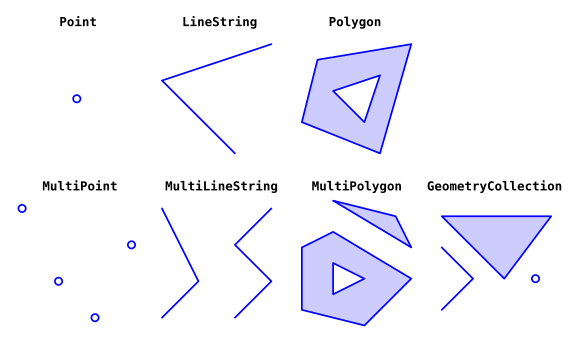
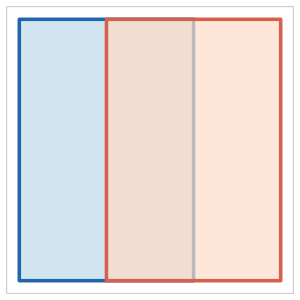
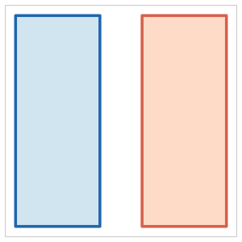
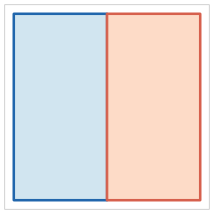
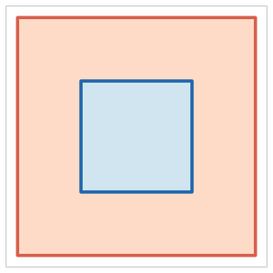
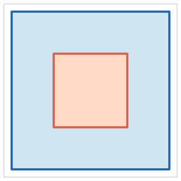
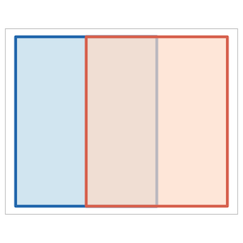
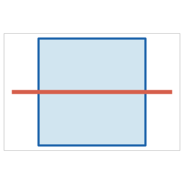
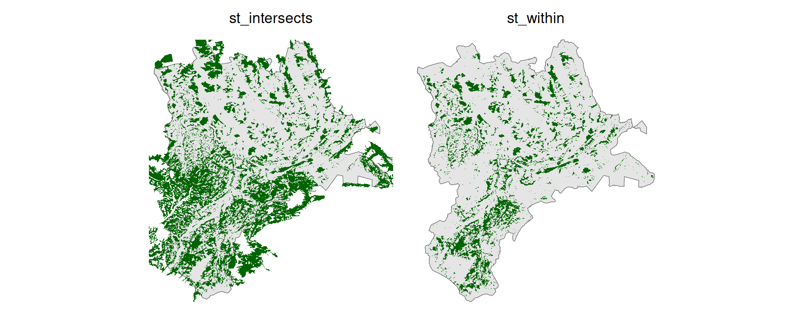
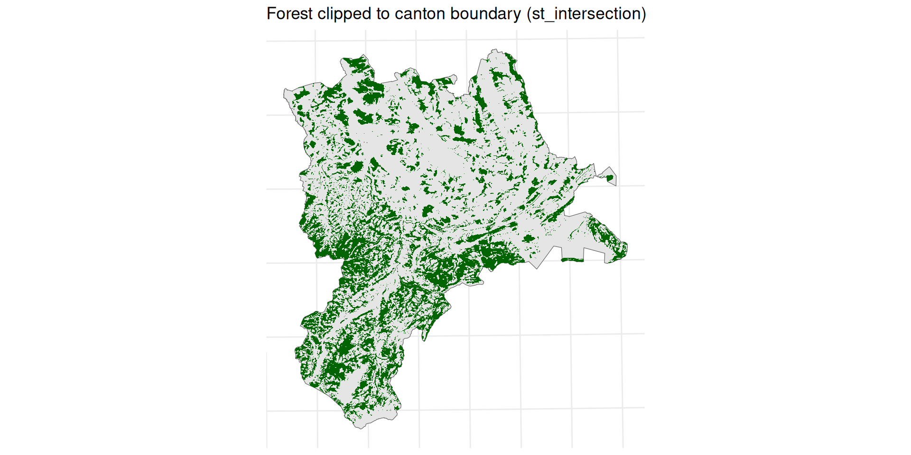

| Type | Description | Dimensions |
|---|---|---|
POINT |
zero-dimensional geometry containing a single point | 0 |
LINESTRING |
sequence of points connected by straight, non-self-intersecting line pieces | 1 |
POLYGON |
sequence of points forming a closed, non-self-intersecting ring (with optional holes) | 2 |
MULTIPOINT |
set of points | 0 |
MULTILINESTRING |
set of linestrings | 1 |
MULTIPOLYGON |
set of polygons | 2 |
GEOMETRYCOLLECTION |
set of geometries of any of the above types | NA |
Geocomputation with Vector Data
ZHAW School of Life Sciences and Facility Management Institute of Natural Resource Sciences Grüentalstrasse 14, 8820 Wädenswil
+41 (0) 58 934 55 63 nils.ratnaweera@zhaw.ch
Research Associate at the Research Group for Geoinformatics www.zhaw.ch/iunr/geoinformatik
Today
- Simple Features — the standard behind all vector GIS tools
- Coordinate Reference Systems — datums, projections, units, silent errors
- GDAL & file formats — the common backbone, format trade-offs
- Binary Predicates — spatial relationships and choosing the right one
- Geometry Operations — set algebra, type changes
- Group Work — two algorithmic challenges
Simple Features
Why a standard?
- Vector data is used in PostGIS, QGIS, R, Python, ArcGIS, GDAL, …
- Simple Features (ISO 19125-1:2004) is the OGC standard all major spatial tools implement
- It defines: geometry types, encoding, and spatial relationships
What is a feature?
A simple feature is defined […] to have both spatial and non-spatial attributes. Spatial attributes are geometry valued, and simple features are based on 2D geometry with linear interpolation between vertices.
— ISO 19125
- A feature is a real-world object: a building, a road, a lake
- Every feature has:
- A geometry — location and shape on Earth
- Attributes — everything else (name, population, category, …)
- The geometry has a type and must satisfy validity rules
Geometry types
- 18 types defined in the standard; 7 cover the vast majority of real-world data:

Figure 1: Image source: Dorman (2023)
- All types are composed of points (0D), lines (1D), or areas (2D)
- Composite types arise naturally: a country with islands →
MULTIPOLYGON, a branching river →MULTILINESTRING - Every type has validity rules — violations cause silent errors or failed operations
| Violation | Description |
|---|---|
| Self-intersecting ring | A polygon whose boundary crosses itself (figure-8 shape) |
| Unclosed ring | Polygon exterior ring does not start and end at the same point |
| Hole outside exterior | A polygon hole lies outside or only partially inside the exterior ring |
| Duplicate points | Consecutive identical vertices in a ring |
| Wrong winding order | Exterior ring must be CCW; holes must be CW (OGC/ISO rule) |
st_is_valid()checks;st_make_valid()attempts to fix- Winding order is not checked by GEOS — violations pass validation but can break ESRI format interchange (Shapefiles use the opposite convention: exterior CW)
Coordinate Reference Systems
The Earth is not flat
- The Earth is approximated as an ellipsoid: slightly flattened at the poles, bulging at the equator
- A datum defines which ellipsoid to use and how to orient it:
- WGS84 — global datum, used by GPS and internet maps
- CH1903+ / LV95 — Swiss national datum, optimized for Switzerland
- The same point has different coordinates in different datums
Projections
- A projection transforms 3D ellipsoid coordinates onto a flat 2D plane
- Every projection distorts at least one property — there is no undistorted flat map:
- Equal-area — preserves area; distorts shape and angles
- Conformal — preserves local shape / angles; distorts area
- Equidistant — preserves distance from a point; distorts area and shape
- National systems (e.g. LV95 / EPSG:2056) are conformal, minimizing distortion locally
EPSG codes
- EPSG codes are the standard identifiers for coordinate reference systems:
| EPSG | Name | Unit | Typical use |
|---|---|---|---|
| 4326 | WGS84 | degree | GPS, global data, GeoJSON default |
| 2056 | CH1903+ / LV95 | meter | Swiss national datasets |
| 3857 | Web Mercator | meter | Web map tiles (Google, OSM) |
| 25832 | ETRS89 / UTM Zone 32N | meter | Central Europe |
CRS in practice: the silent error
- Measurement operations (distance, area, buffer) use the CRS unit
- EPSG:4326 unit is degrees —
st_buffer(x, 1000)means 1000 degrees, not meters
https://www.google.com/maps/place/8°32'24.0"N+47°22'48.0"E/@8.54,47.3774197,10z
1 [m]Geometry set for 1 feature
Geometry type: POINT
Dimension: XY
Bounding box: xmin: 2683171 ymin: 1248268 xmax: 2683171 ymax: 1248268
Projected CRS: CH1903+ / LV95- Always check CRS before measurement; transform if needed
- Axis order trap: everyday usage is lat, lon (47.38, 8.54); sf / EPSG:4326 expects (x, y) = lon, lat (8.54, 47.38)
GDAL and the Vector Ecosystem
GDAL: one library, many tools
- GDAL (Geospatial Data Abstraction Library) underlies almost all GIS software:
- QGIS, ArcGIS, GRASS, SAGA, FME, …
- R (
sf) - Python (
geopandas) - PostGIS
- GDAL supports 80+ vector formats;
sfinherits all of them
Important Vector file formats
| Format | Extension | Strengths | Limitations |
|---|---|---|---|
| Shapefile | .shp (+ 4 files) |
Universal legacy support | 10-char field names; 2 GB limit; no nulls |
| GeoJSON | .geojson |
Human-readable; single file; web-native | Large files; no spatial index |
| GeoPackage | .gpkg |
Modern; single file; multiple layers; SQLite inside | Less universal than Shapefile |
| PostGIS | (database) | Live DB; concurrent access; fast spatial index | Requires a server |
| FlatGeobuf | .fgb |
Very fast; streamable; built-in spatial index | Newer, less tool support |
| DuckDB | .duckdb |
Columnar analytics; spatial extension; queries remote files | Not a traditional GIS format |
Binary Predicates
Spatial relationships as questions
- Binary predicates return TRUE/FALSE for a pair of geometries
- The question determines the correct predicate:
- Is this building inside the flood zone? →
st_within(building, zone) - Does this road cross the zone? →
st_crosses(road, zone) - Does any part of this forest touch Luzern? →
st_intersects(forest, luzern)
- Is this building inside the flood zone? →
- The same pair can satisfy multiple predicates — wrong choice gives silently wrong results
Named predicates
| Predicate | When TRUE | Typical use case | |
|---|---|---|---|
intersects |
 |
Any overlap exists (broadest) | Initial spatial filter |
disjoint |
 |
No overlap whatsoever | Exclusion / NOT queries |
touches |
 |
Boundaries meet; interiors do not | Adjacent parcels, shared borders |
Named predicates
| Predicate | When TRUE | Typical use case | |
|---|---|---|---|
within |
 |
All of A is inside B | Point-in-polygon, containment |
contains |
 |
All of B is inside A | Inverse of within |
overlaps |
 |
Interiors intersect; neither contains the other | Partial overlap of same-type features |
crosses |
 |
Interior of A intersects interior of B in lower dimension | Road through a zone |
Choosing the right predicate
# intersects: any part of the forest touches Luzern (including tiny overlap at the border)
wald_intersects <- st_filter(tlm_wald, luzern, .predicate = st_intersects)
# within: the *entire* forest polygon lies inside Luzern
wald_within <- st_filter(tlm_wald, luzern, .predicate = st_within)
nrow(wald_intersects) # more: includes forests that merely touch the border[1] 3852[1] 3729
Figure 2: st_intersects (left) vs st_within (right) — same data, different predicate, different question answered
Geometry Operations
Unary operations
- Take one geometry, return a (possibly different type of) geometry:
| Operation | What it does | Output type |
|---|---|---|
st_buffer(x, dist) |
Expand by distance | Polygon |
st_centroid(x) |
Center point | Point |
st_simplify(x, tol) |
Reduce vertex count | Same type |
st_convex_hull(x) |
Smallest convex polygon enclosing the geometry | Polygon |
st_boundary(x) |
The boundary of the geometry | Lower dimension |
Binary set operations
- Set algebra on geometries — same logic as SQL set operations
st_union()on a single layer: dissolve / aggregate — analogous toGROUP BYin SQL
| Operation | Returns | Set notation |
|---|---|---|
st_intersection(A, B) |
Parts where A and B overlap | A ∩ B |
st_union(A, B) |
All of A and B, merged | A ∪ B |
st_difference(A, B) |
Parts of A outside B | A B |
st_sym_difference(A, B) |
Parts of A or B, but not both | A △ B |
Operations can change geometry type
- Output type depends on the geometry relationship, not just the operation
- Intersecting two polygons can yield a polygon, a line, or a point:
- Overlapping → polygon;
- sharing only an edge → line;
- sharing only a corner → point
- Code expecting a polygon fails silently if inputs only touch
0.2721733 [1]
Group Work
Write an algorithm
How do you make a Peanutbutter & Jelly Sandwitch (PB&J)

Challenge 1: Bounding box of a point stream
A continuous stream of 2D coordinates arrives one point at a time.
Task: develop an algorithm for the smallest axis-aligned bounding box of all points received so far.
Constraints: process each point once; do not store the full list; update the box on each new point.
Example stream:
2489750, 1117500 2506250, 1172500 2552750, 1223500 ...
Closed book!
Do not use any external sources. Solve with your own ideas in groups
Challenge 2: Is a point inside a polygon?
- Given: an ordered sequence of 2D polygon vertices and a point with known coordinates.
- Task: develop an algorithm that determines whether the point is inside or outside the polygon.
- Constraints: use only the vertex coordinates; no visual inspection; must work for arbitrary simple polygons.
Closed book!
Do not use any external sources. Solve with your own ideas in groups
References
Pebesma, Edzer. 2018. “Simple Features for R: Standardized Support for Spatial Vector Data.” The R Journal 10 (1): 439–46. https://doi.org/10.32614/RJ-2018-009.